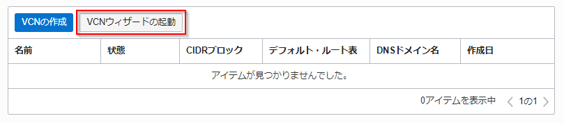
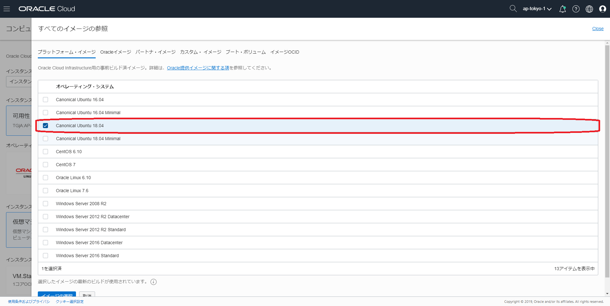

Fn Projectことはじめ¶
Fn Projectは、開発者エクスペリエンス重視なFaaSを構築するためのプラットフォームです。
このエントリーでは、Fn Projectの環境構築から動作確認までの手順を記します。
条件¶
- クラウド環境
- 有効なOracle Cloudアカウントがあること
全体の流れ¶
手順の大まかな流れは以下のとおりです。
- ネットワークとコンピュートインスタンスの作成
- Fn Project実行環境の構築
- functionの作成と実行
注意事項: コンパートメントについて
Oracle Cloudにはコンパートメントという考え方があります。
コンパートメントは、クラウド・リソース(インスタンス、仮想クラウド・ネットワーク、ブロック・ボリュームなど)を分類整理する論理的な区画で、この単位でアクセス制御を行うことができます。また、OCIコンソール上に表示されるリソースのフィルタとしても機能します。
今回は、ルートコンパートメントと呼ばれるすべてのリソースを保持するコンパートメントを利用するので、特に意識する必要がありません。
1 . ネットワークとコンピュートインスタンスの作成¶
まずはじめに、OCI(Oracle Cloud Infrastructure)上でFn Projectを実行するための環境構築をしていきます。
1-1. VCN（ネットワーク）の作成¶
Oracle Cloudのダッシューボードにログインし、ダッシューボード画面のハンバーガメニューで"ネットワーキング"=>"仮想クラウド・ネットワーキング"をクリックします。
表示された画面左下の"スコープ"内の"コンパートメント"をクリックし、ルートコンパートメント(下記の場合は"functionshandson")を選択します。ルートコンパートメントはOracle Cloudの登録時に設定した名称になります。既に選択されている場合は、この手順はスキップしてください。
"仮想クラウド・ネットワークの作成"をクリックします。

任意の名前(こだわりがなければ"Fn Project Handson")を入力し、"仮想クラウド・ネットワークおよび関連リソースの作成"を選択、一番下の"仮想クラウド・ネットワークの作成"をクリックします。

以上で、VCN(ネットワーク)の作成は終わりです。
1-2. コンピュートインスタンスの作成¶
次に、Fn Projectを動作させるために利用するコンピュートインスタンスの作成を行います。
Oracle Cloudのダッシューボードにログインし、ダッシューボード画面のハンバーガメニューで"コンピュート"=>"インスタンス"をクリックします。

表示された画面左下の"リスト範囲"内の"コンパートメント"をクリックし、ルートコンパートメント(下記の場合は"functionshandson")を選択します。ルートコンパートメントはOracle Cloudの登録時に設定した名称になります。既に選択されている場合は、この手順はスキップしてください。
"インスタンスの作成"をクリックします。
"イメージ・ソースの変更"をクリックします。
上部の"プラットフォーム・イメージ"タブ=>"Canonical Ubuntu 18.04"をクリックします。

画面下部の"イメージの選択"をクリックします。
画面をスクロールし、"SSHキーの追加"で"ファイルの選択"をクリックし、ローカルに配置しているSSHキー(公開鍵)を選択します。

"仮想クラウド・ネットワーク"で1-1で作成したネットワーク名(手順1-1に記載の名前で作成した方は"Fn Project Handson")を選択し、"作成"をクリックします。
インスタンスが作成され、"プロビジョニング中"になります。 しばらくするとインスタンスが"実行中"になり、インスタンスにログインできるようになります。
以上で、コンピュートインスタンスの作成は終わりです。
2 . Fn Project実行環境の構築¶
ここでは、上の手順で作成したコンピュートインスタンス上に、Fn Projectを実行するための環境構築を行います。
Fn Projectを起動させるには、以下が必要です。
- 環境
- Docker 17.10 (or higher) がインストール済みの環境
今回は、Docker 18.03をインストールして使用します。
2-1. ログイン¶
1-2で作成した環境にログインします。今回はTera Termを利用してログインします。
ダッシューボード画面のハンバーガメニューで"コンピュート"の"インスタンス"画面をクリックします。
1-2で作成したコンピュートインスタンスをクリックします。
インスタンス情報の"パブリックIPアドレス"のIPアドレスを確認します。
上記で確認したパブリックIPアドレスをTera Termのホストに入力し、"OK"をクリックします。

"ユーザ名"に"ubuntu"を入力、ローカルに配置しているSSHキー(秘密鍵)を選択し、"OK"をクリックします。
上記手順でログインができます。
2-2. Dockerのインストール¶
ログインしたら、パッケージインデックスの更新するために以下のコマンドを実行します。
sudo apt-get update
次に事前に必要なパッケージの導入を行うために以下のコマンドを実行します。
sudo apt-get install -y \ apt-transport-https \ ca-certificates \ curl \ software-properties-common
GPG公開鍵のインストールを行うために以下のコマンドを実行します。
curl -fsSL https://download.docker.com/linux/ubuntu/gpg | sudo apt-key add -
GPG公開鍵がインストールされたことを確認するために以下のコマンドを実行します。
sudo apt-key fingerprint 0EBFCD88
以下のように表示されれば、GPG公開鍵がインストールされています。
pub rsa4096 2017-02-22 [SCEA] 9DC8 5822 9FC7 DD38 854A E2D8 8D81 803C 0EBF CD88 uid [ unknown] Docker Release (CE deb) <docker@docker.com> sub rsa4096 2017-02-22 [S]
リポジトリの追加を行うために以下のコマンドを実行します。
sudo add-apt-repository \ "deb [arch=amd64] https://download.docker.com/linux/ubuntu \ $(lsb_release -cs) \ stable"
再度、パッケージインデックスを更新します。
sudo apt-get update
インストール可能なDockerバージョンをチェックします。
apt-cache madison docker-ce
以下のように表示されます。本ハンズオンでは、"18.03.1"を使用します。
docker-ce | 5:19.03.1~3-0~ubuntu-bionic | https://download.docker.com/linux/ubuntu bionic/stable amd64 Packages docker-ce | 5:19.03.0~3-0~ubuntu-bionic | https://download.docker.com/linux/ubuntu bionic/stable amd64 Packages docker-ce | 5:18.09.8~3-0~ubuntu-bionic | https://download.docker.com/linux/ubuntu bionic/stable amd64 Packages docker-ce | 5:18.09.7~3-0~ubuntu-bionic | https://download.docker.com/linux/ubuntu bionic/stable amd64 Packages docker-ce | 5:18.09.6~3-0~ubuntu-bionic | https://download.docker.com/linux/ubuntu bionic/stable amd64 Packages docker-ce | 5:18.09.5~3-0~ubuntu-bionic | https://download.docker.com/linux/ubuntu bionic/stable amd64 Packages docker-ce | 5:18.09.4~3-0~ubuntu-bionic | https://download.docker.com/linux/ubuntu bionic/stable amd64 Packages docker-ce | 5:18.09.3~3-0~ubuntu-bionic | https://download.docker.com/linux/ubuntu bionic/stable amd64 Packages docker-ce | 5:18.09.2~3-0~ubuntu-bionic | https://download.docker.com/linux/ubuntu bionic/stable amd64 Packages docker-ce | 5:18.09.1~3-0~ubuntu-bionic | https://download.docker.com/linux/ubuntu bionic/stable amd64 Packages docker-ce | 5:18.09.0~3-0~ubuntu-bionic | https://download.docker.com/linux/ubuntu bionic/stable amd64 Packages docker-ce | 18.06.3~ce~3-0~ubuntu | https://download.docker.com/linux/ubuntu bionic/stable amd64 Packages docker-ce | 18.06.2~ce~3-0~ubuntu | https://download.docker.com/linux/ubuntu bionic/stable amd64 Packages docker-ce | 18.06.1~ce~3-0~ubuntu | https://download.docker.com/linux/ubuntu bionic/stable amd64 Packages docker-ce | 18.06.0~ce~3-0~ubuntu | https://download.docker.com/linux/ubuntu bionic/stable amd64 Packages docker-ce | 18.03.1~ce~3-0~ubuntu | https://download.docker.com/linux/ubuntu bionic/stable amd64 Packages
以下のコマンドでDockerをインストールします。
sudo apt-get install -y docker-ce=18.03.1~ce~3-0~ubuntu
これでDockerのインストールは完了です。
Dockerは自動的に起動しているので、以下のコマンドで動作確認してみます。
sudo docker container run hello-world
以下のように表示されれば、問題なく起動できています。
Hello from Docker! This message shows that your installation appears to be working correctly. To generate this message, Docker took the following steps: 1. The Docker client contacted the Docker daemon. 2. The Docker daemon pulled the "hello-world" image from the Docker Hub. (amd64) 3. The Docker daemon created a new container from that image which runs the executable that produces the output you are currently reading. 4. The Docker daemon streamed that output to the Docker client, which sent it to your terminal. To try something more ambitious, you can run an Ubuntu container with: $ docker run -it ubuntu bash Share images, automate workflows, and more with a free Docker ID: https://hub.docker.com/ For more examples and ideas, visit: https://docs.docker.com/get-started/
Dockerは、rootユーザで利用することが奨励されていないので、ubuntuユーザで利用できるように以下のコマンドを実行します。
sudo usermod -aG docker ubuntu
上記コマンドを実行したらexitコマンドでコンピュートインスタンスからログアウトし、ログインし直します。
再ログイン後に、ubuntuユーザでDockerを利用できるかどうかを以下のコマンドで確認します。
docker container run hello-world
先ほど実行した"sudo docker container run hello-world"の結果と同様になれば成功です。
2-3. Fn CLIとFn Serverのインストール¶
ここでは、Fn Projectを動作させるためにFn ServerとFn Clientをインストールします。
本ハンズオンでは、それぞれのバージョンを以下とします。
- Fn CLI:0.5.74
- Fn Server:0.3.694
2-3-1. Fn CLIのインストール¶
まず、Fn CLIのインストールを行います。
Fn Server:0.5.74をインストールするためのインストールスクリプトを以下のレポジトリに配置しているので、任意のディレクトリでcloneします。
git clone https://github.com/oracle-japan/faas-fnproject-handson
cloneしたディレクトリに移動します。
cd faas-fnproject-handson
以下のコマンドを実行し、スクリプトへの権限を付与します。
chmod 755 install.sh
以下のコマンドを実行し、Fn CLIをインストールします。
sh install.sh
インストールに成功すると以下のように表示されます。
fn version 0.5.74 ______ / ____/___ / /_ / __ \ / __/ / / / / /_/ /_/ /_/`
これで、Fn CLIのインストールは完了です。
2-3-2. Fn Serverのインストール¶
次にFn Serverのインストールを行います。 Fn Server:0.3.694のコンテナイメージをpullするために以下のコマンドを実行します。
docker image pull fnproject/fnserver:0.3.694
先ほどpullしたコンテナイメージを確認するために以下のコマンドを実行します。
docker image ls
以下のように、"fnproject/fnserver"というイメージが表示されていれば、Fn Serverのコンテナイメージをpullできています。
REPOSITORY TAG IMAGE ID CREATED SIZE fnproject/fnserver 0.3.694 c127f1aafb2f 3 weeks ago 161MB
この後のFn Serverの起動の準備として、Fn Serverのコンテナイメージのタグを"latest"に変更しておきます。
タグの変更は以下のコマンドを使用します。
docker image tag [IMAGE ID] [コンテナイメージ名]:latest
このハンズオン手順では以下のようになります。
docker image tag c127f1aafb2f fnproject/fnserver:latest
タグが変更されたことを確認するために以下のコマンドを実行します。
docker image ls
以下のようにlatestタグのコンテナイメージが追加されていればOKです。
REPOSITORY TAG IMAGE ID CREATED SIZE fnproject/fnserver 0.3.694 c127f1aafb2f 3 weeks ago 161MB fnproject/fnserver latest c127f1aafb2f 3 weeks ago 161MB
Note
Fn Serverの起動には、Fn Project専用のCLI(Fn CLI)を利用します。このCLIでは、"fnproject/fnserver:latest"というイメージ名／タグのコンテナイメージが固定で利用されるため、上記のような変更を行っています。
Fn Serverを起動するために以下のコマンドを実行します。
fn start
以下のように表示されれば成功です。
time="2019-07-16T09:38:19Z" level=info msg="available memory" cgroup_limit=9223372036854771712 head_room=1447603814 total_memory=14476038144 time="2019-07-16T09:38:19Z" level=info msg="ram reservations" avail_memory=13028434330 time="2019-07-16T09:38:19Z" level=info msg="available cpu" avail_cpu=2000 total_cpu=2000 time="2019-07-16T09:38:19Z" level=info msg="cpu reservations" cpu=2000 ______ / ____/___ / /_ / __ \ / __/ / / / / /_/ /_/ /_/ v0.3.694 time="2019-08-26T10:16:30Z" level=info msg="Fn serving on `:8080`" type=full version=0.3.694
これでFn Serverが起動したので、このコンソールはこのままの状態にしておきます。
以上で、Fn Project実行環境の構築は終わりです。
3 . functionの作成と実行¶
ここでは、Fn Projectで動作するfunctionを作成し、実際に動かしてみます。
3-1. functionの作成¶
まず、Tera Termのメニューから"セッションの複製"をクリックし、新しいコンソールでコンピュートインスタンスにログインします。
次に、fn initコマンドを使用してfunctionのひな形を作成します。今回は、以下のコマンドを実行します。
fn init --runtime java javafn
ここではfunctionをJavaで記述しますので、--runtime javaというオプションを指定しています。
ひな形の作成が成功すると以下のように表示されます。
Creating function at: ./javafn Function boilerplate generated. func.yaml created.
ここまでの時点で、"Hello World"と返すだけのシンプルなfunctionの作成が完了しています。
fn initコマンド
fn initコマンドはfunctionのひな形を生成するコマンドです。主要なオプションは以下のとおりです。
- --runtime:
- 使用する言語を指定します。Java, Go, Node(JavaScript)などから選択することが 可能です。
その他コマンドの詳細については、 Fn CLIのリファレンスを参照ください。
作成したディレクトリに移動します。
cd javafn
"javafn"ディレクトリ配下は以下のような構成になっています。
├── func.yaml ├── pom.xml └── src ├── main │ └── java │ └── com │ └── example │ └── fn │ └── HelloFunction.java └── test └── java └── com └── example └── fn └── HelloFunctionTest.java 11 directories, 4 files
- ディレクトリ配下の各項目の説明
- func.yaml - functionを動作させる際の様々な定義を記載した設定ファイル。具体的な設定値は以降の手順で説明。
- pom.xml - functionをビルドする際の定義を記載した設定ファイル。(Java以外の場合はその言語に合わせたビルド設定ファイルが生成される)
- src - functionのソースコードとテストケース。
func.yamlを確認してみます。
schema_version: 20180708 name: javafn version: 0.0.1 runtime: java build_image: fnproject/fn-java-fdk-build:jdk11-1.0.98 run_image: fnproject/fn-java-fdk:jre11-1.0.98 cmd: com.example.fn.HelloFunction::handleRequest
- func.yamlの各項目の説明
- schema_version - このfunctionファイルのスキーマのバージョン
- runtime - このfunctionで使用する言語
- build_image - このfunctionイメージをビルドするためのイメージ
- cmd - このfunctionクラスの完全修飾名とこのfunctionの関数が呼び出されたときに呼び出されるメソッド名
以上で、functionの作成は完了です。
3-2. functionの実行¶
まず、functionを実行する上で必要な準備を行っていきます。
functionをFn Serverにデプロイするためには、applicationと呼ばれる区画を予め作成しておく必要があります。applicationは複数のfunctionを内包する管理単位です。
以下のように、fn create appコマンドを実行してapplicationを作成します。
fn create app hello-app
次に、fn deployコマンドを使用してfunctionをデプロイします。
fn --verbose deploy --app hello-app --local
以下のように表示されることを確認します。(しばらく時間がかかります)
Deploying javafn to app: hello-app Bumped to version 0.0.2 Building image javafn:0.0.2 FN_REGISTRY: FN_REGISTRY is not set. Current Context: default Sending build context to Docker daemon 14.34kB Step 1/11 : FROM fnproject/fn-java-fdk-build:jdk11-1.0.98 as build-stage ---> d490a89232cf Step 2/11 : WORKDIR /function ---> Using cache ---> 931e8c2e85d5 (中略) Step 11/11 : CMD ["com.example.fn.HelloFunction::handleRequest"] ---> Using cache ---> 5970d6bcd334 Successfully built 5970d6bcd334 Successfully tagged javafn:0.0.2 Updating function javafn using image javafn:0.0.2... Successfully created function: javafn with javafn:0.0.2
fn deployコマンド
fn deployコマンドはfunctionをFn Serverにデプロイするコマンドです。主要なオプションは以下のとおりです。
- --verbose:
- デプロイ時に詳細なログメッセージを出力します。
- --app:
- functionをデプロイするapplicationを指定します。
- --local:
- functionをコンテナレジストリにPushせず、直接Fn Serverにデプロイします（Fn ProjectではfunctionはすべてDockerコンテナとして動作します）。
その他コマンドの詳細については、 Fn CLIのリファレンスを参照ください。
fn invokeコマンドを実行し、functionを実行します。 引数は[application名] [function名]の順に指定します。
fn invoke hello-app javafn
以下のように表示されたら成功です。
Hello, World!
以上で、Fn Projectのハンズオンは終了です。
Fn Projectの開発者エクスペリエンスをご体感頂けたでしょうか。